Context
Harvard had never fielded a Formula SAE team. Seven seniors split the car into capstone projects (chassis, steering, powertrain, aero, and my rear suspension) so the club would start with real hardware instead of a blank sheet. The target was FSAE's internal-combustion class.
Architecture
I compared MacPherson strut, direct-acting double wishbone, pullrod and pushrod layouts and chose a double wishbone pushrod system. It moves the springs and dampers inboard for better aero and protection, adds adjustability through the rocker, and packages cleanly above the drivetrain.

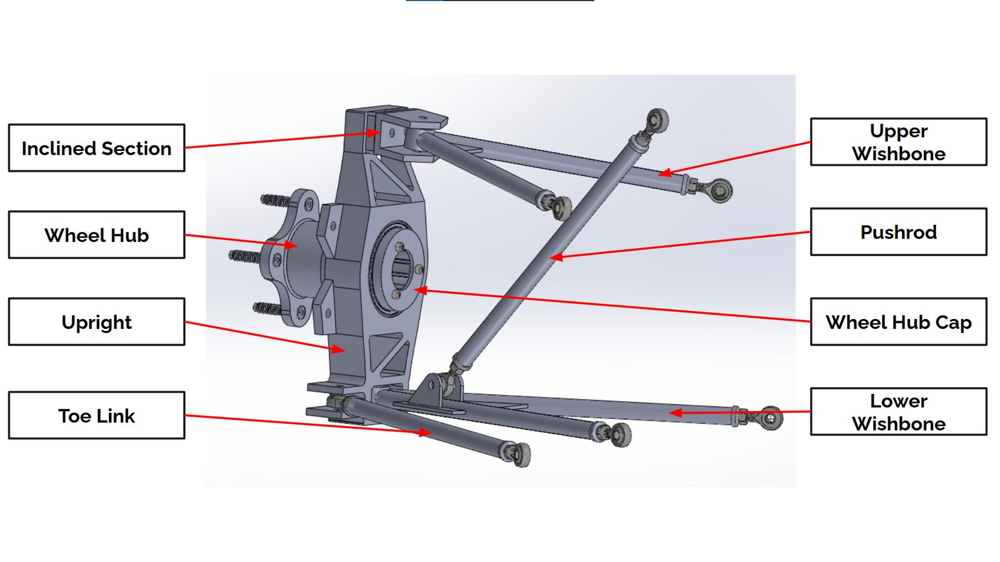

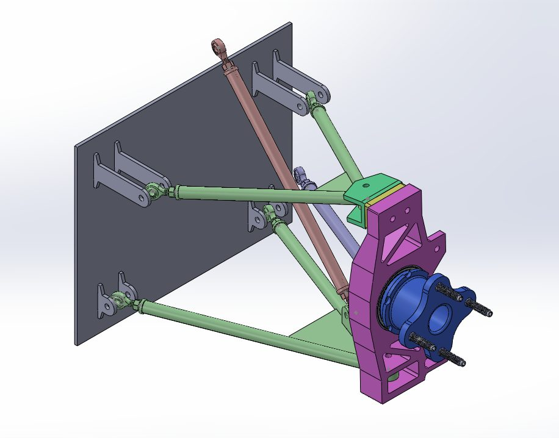

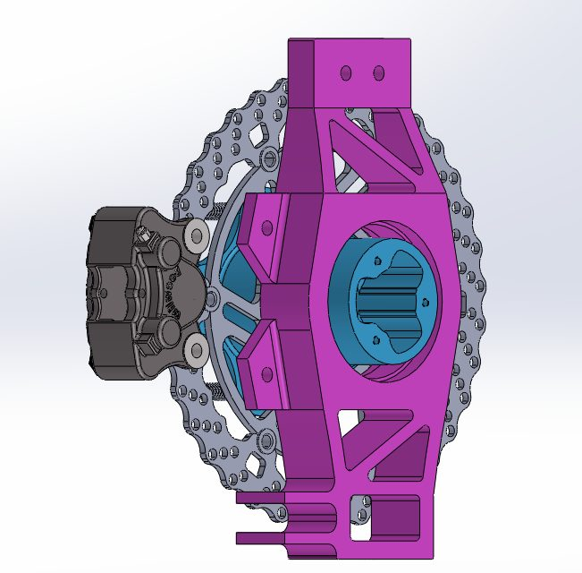
Geometry
The system is built around the Goodyear D2704 20.0x7.0-13 tire. Using SolidWorks sketches and a MATLAB four-bar linkage model, I tuned camber through bump, rebound and body roll:
- Static camber of −1.25° for peak grip
- Camber never goes positive anywhere in wheel travel
- Wheel halves and offsets chosen to minimize scrub radius
- Camber gain optimized against the control-arm pickup points and rear bulkhead geometry
Packaging kept moving the pickup points, so I re-ran the camber analysis against my spec each time and worked with the chassis engineer to lock the bulkhead for his torsional-stiffness FEA.

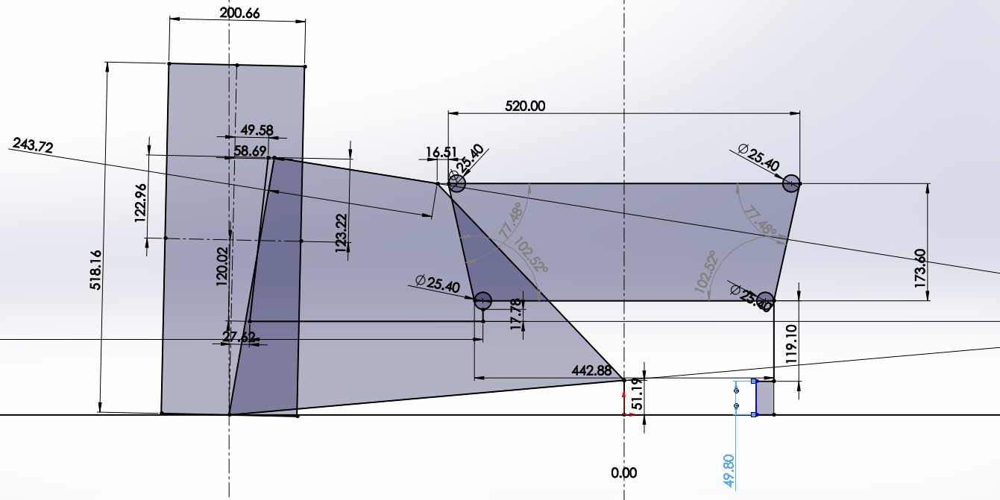

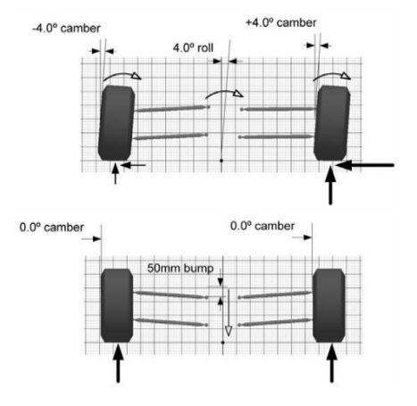
Components & machining
Wheel hub: machined from 7075 aluminum on the manual lathe and mill, with some programmed features. Two ball bearings sit in a stacked configuration; the hub carries the inner races, the brake rotor (RCV floating rotor kit) and the CV axle's tripod mount, which the hub cap retains.
Upright: 6061 aluminum, waterjet-cut outline then finished on the manual mill. An interference fit plus a lip holds both bearing outer races, with mounts for the Wilwood PS1 caliper, both wishbones, the pushrod and the toe link.
Linkages: steel tubing notched, fixtured to prevent warping, and TIG-welded to rod-end inserts and bearing cups turned on the lathe.


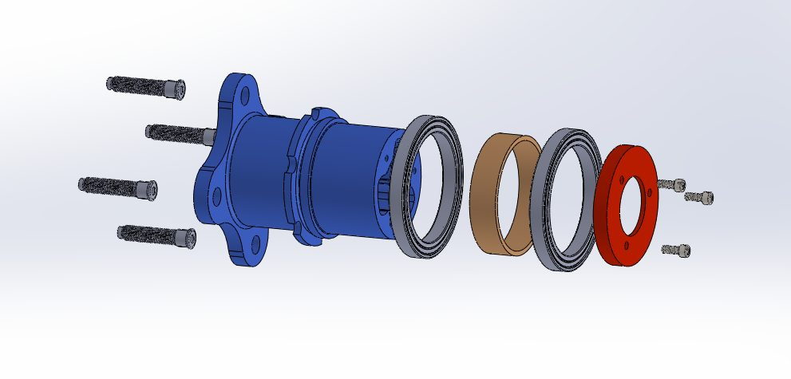

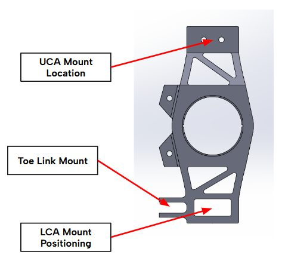

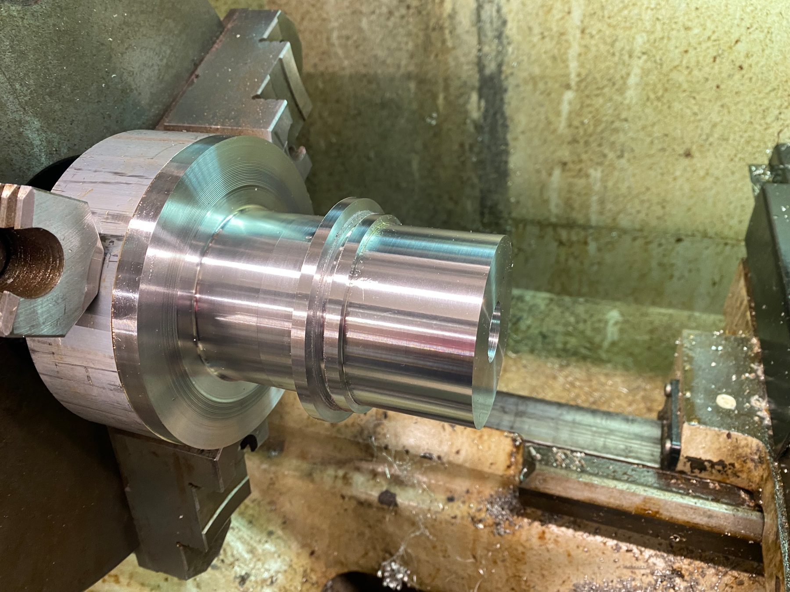

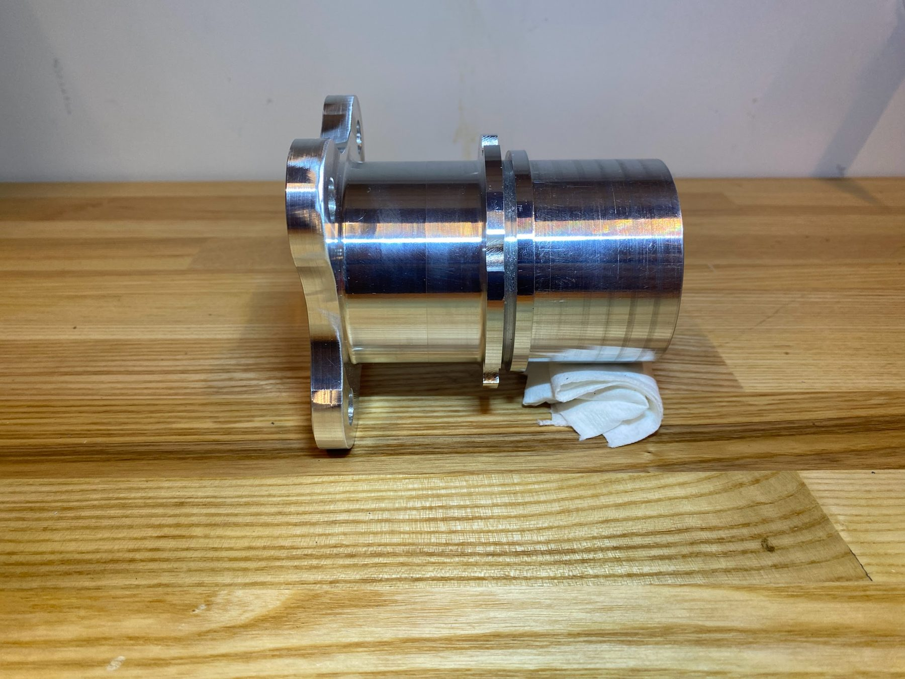

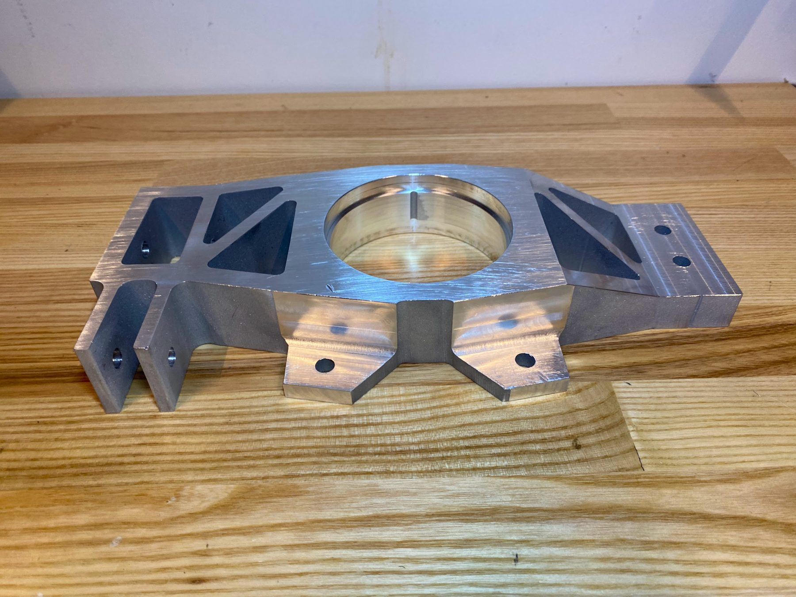

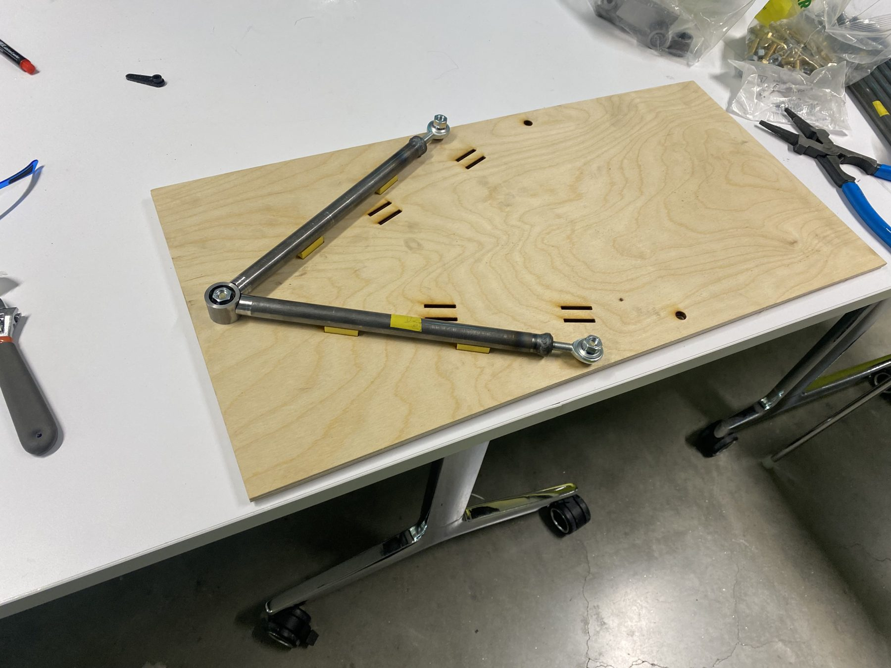

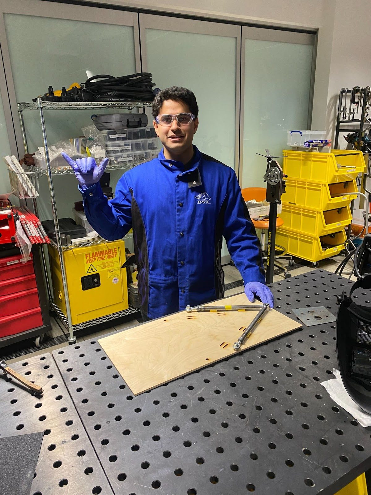

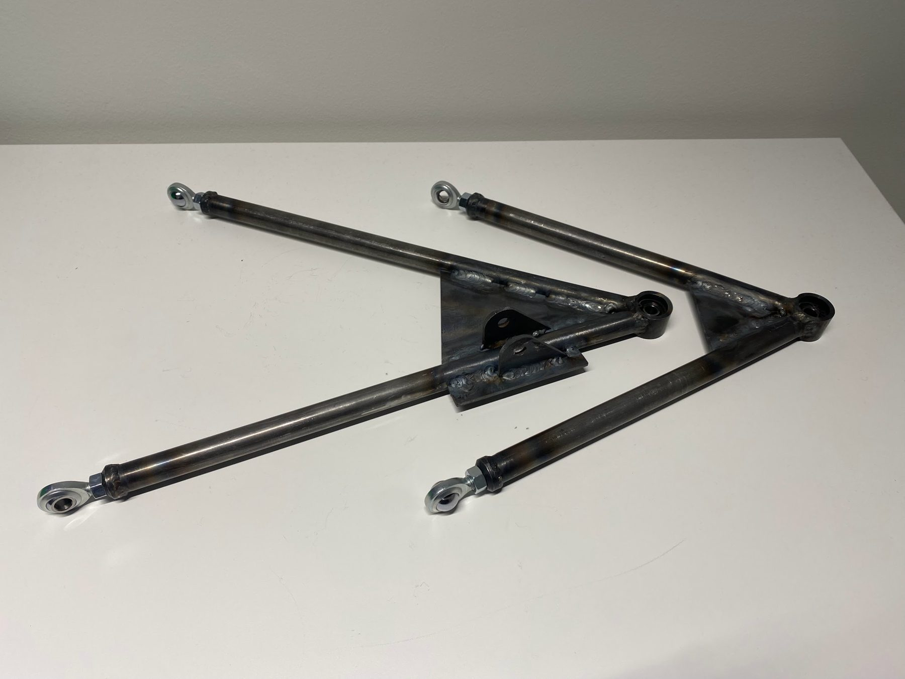
Testing
I built a test rig whose mounts reproduce the chassis pickup points exactly, so I could measure camber through roll and compare it with the model, then checked wheel alignment on the car.

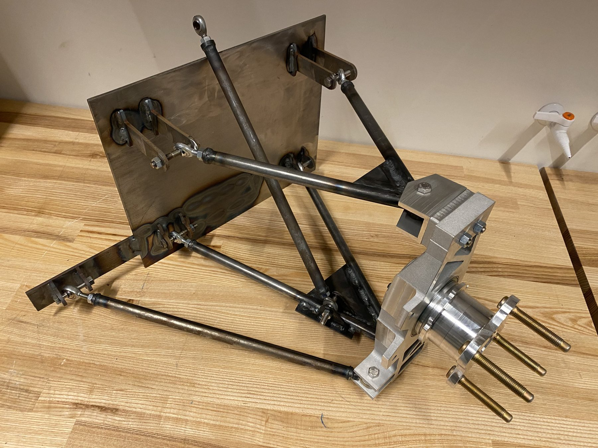

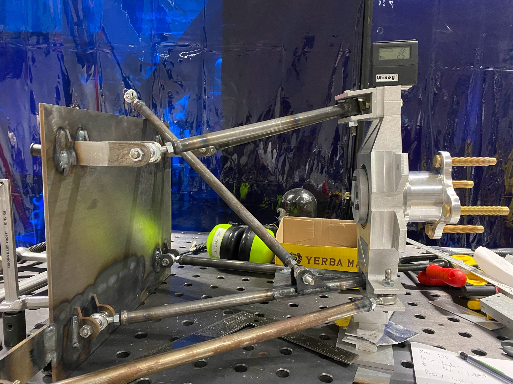

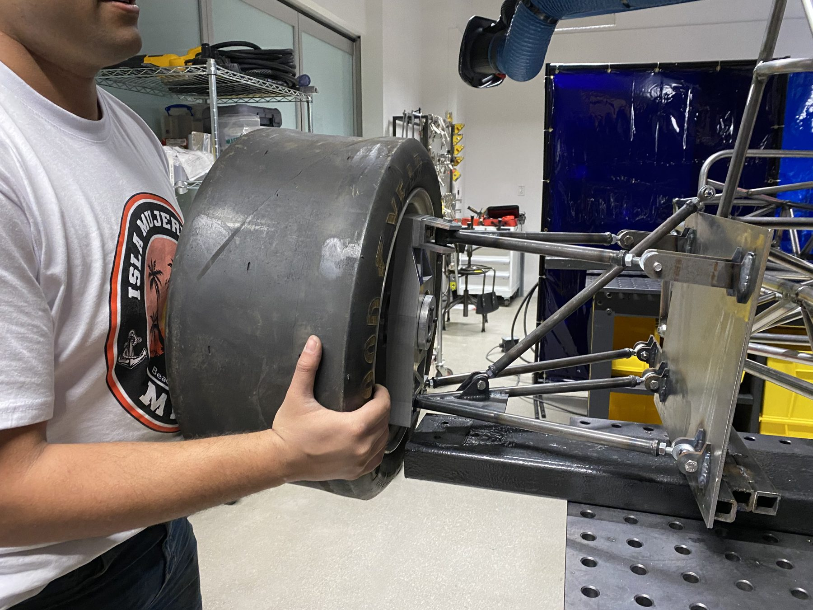

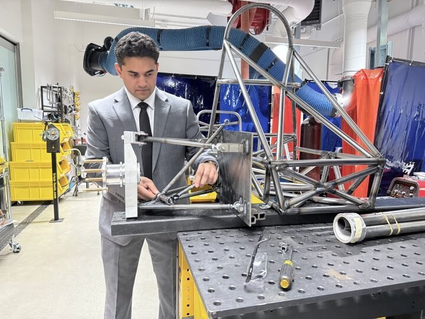